Image Capture Sheet - DAPR 2255 / midi
Generated 2026-09-20. These images are sourced or captured, never generated. Save each file into the folder below using the exact filename shown, then reload this page.
How to use this sheet
- In Finder press Cmd+Shift+G, paste the destination path, press Return.
- Pull each image from the manual or capture it as described.
- Save it into that folder using the exact filename in the chip.
- Reload this page. Green cards are done, dashed cards are still open.
Destination folder:
/Users/adamwolson/Library/CloudStorage/Dropbox/apps/GitHub/Canvas/Classes/DAPR-2255--Audio_Hardware_I/Images/midi/
Keep this sheet in Images/_briefs/. The previews point at ../midi/, so they only resolve from there.
No manual on disk supplies any of these. The general manual library and the per-course manuals folder were both searched first, per Standards 20.6 step 1, and the folders where a fixture, switch or interface manual would sit are empty.
01. Keyboard controller
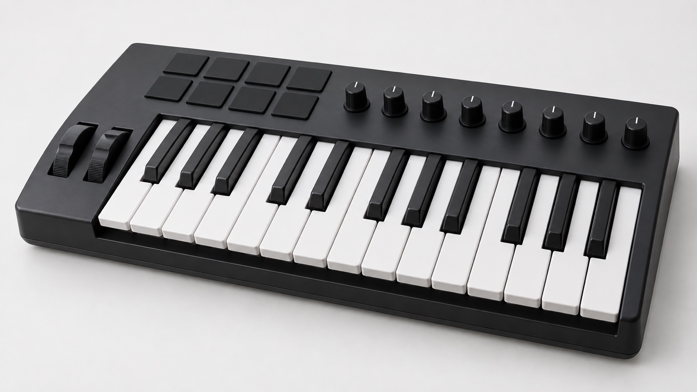
not saved yet../midi/midi-keyboard-controller-01.jpg
02. Rack sound module
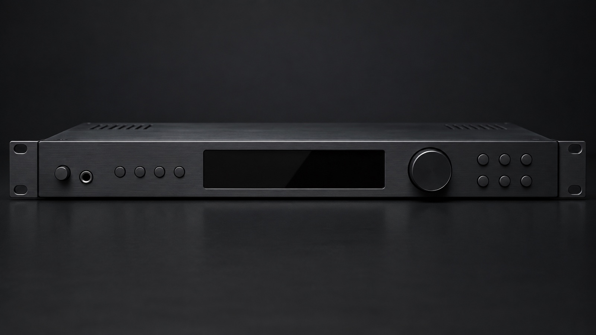
not saved yet../midi/midi-rack-sound-module-01.jpg
03. Interface rear panel
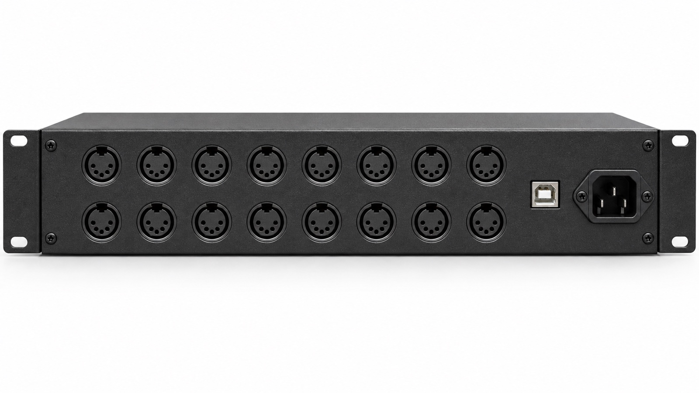
not saved yet../midi/midi-interface-rear-panel-01.jpg
04. Thru box
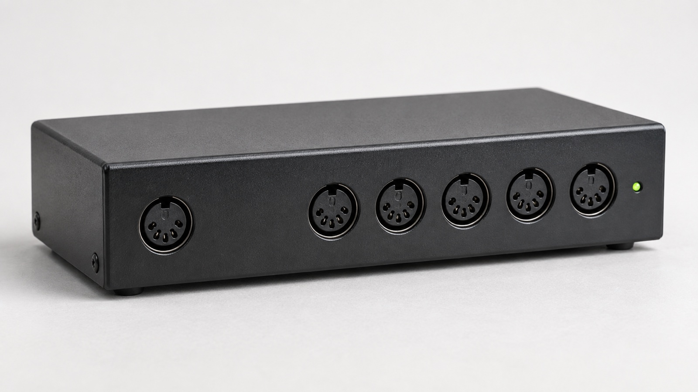
not saved yet../midi/midi-thru-box-01.jpg
05. USB B cable end
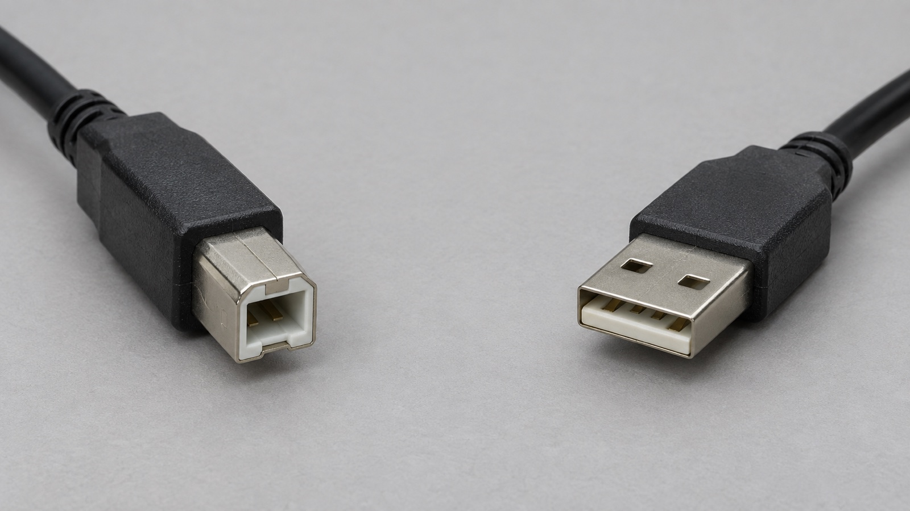
not saved yet../midi/midi-usb-b-cable-end-01.jpg
06. GM sound set screen
 not saved yet
not saved yet../midi/midi-gm-sound-set-screen-01.png
07. Qlab cue list
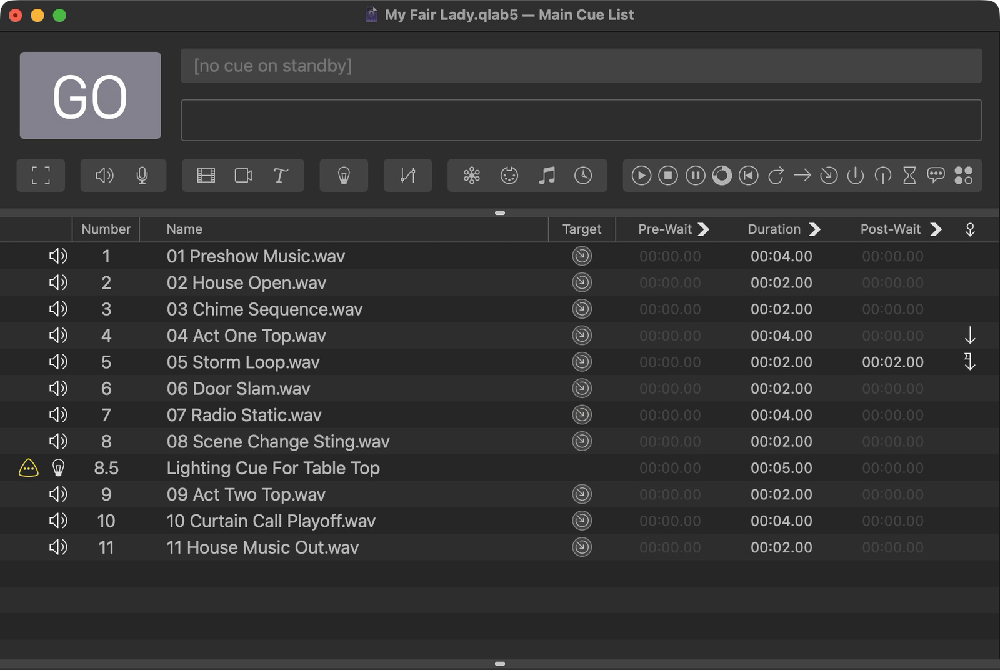
not saved yet../midi/midi-qlab-cue-list-01.png
08. DMX fixture
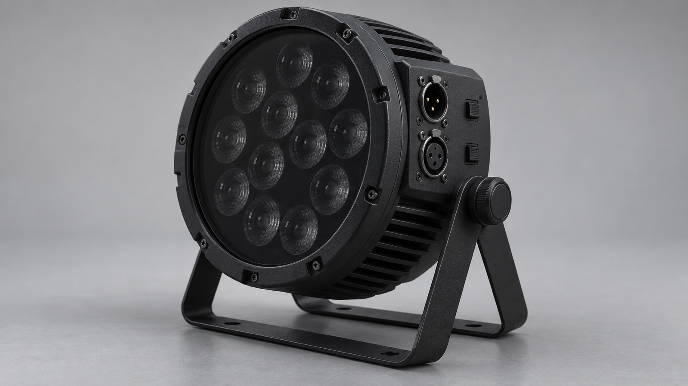
not saved yet../midi/midi-dmx-fixture-01.jpg
09. DMX terminator
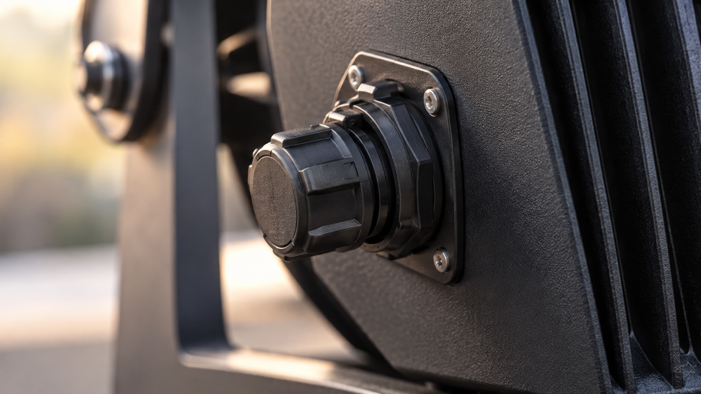
not saved yet../midi/midi-dmx-terminator-01.jpg
10. Managed switch
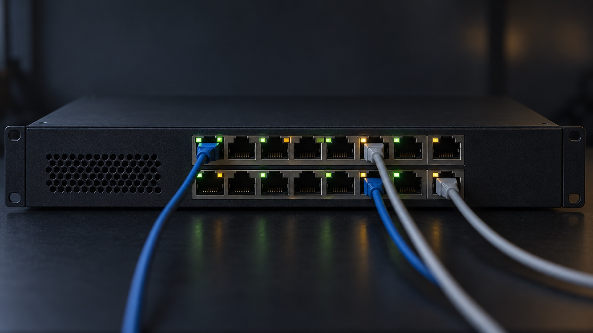
not saved yet../midi/midi-managed-switch-01.jpg
11. Network MIDI preferences
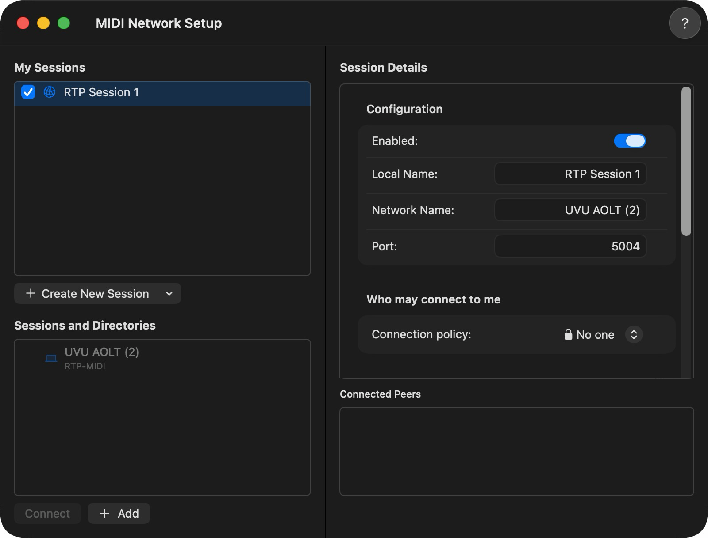
not saved yet../midi/midi-network-midi-preferences-01.png
12. Test kit layout
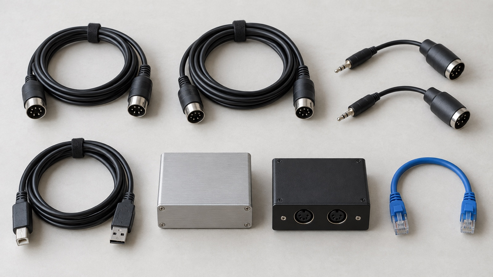
not saved yet../midi/midi-test-kit-layout-01.jpg
13. Monitor window
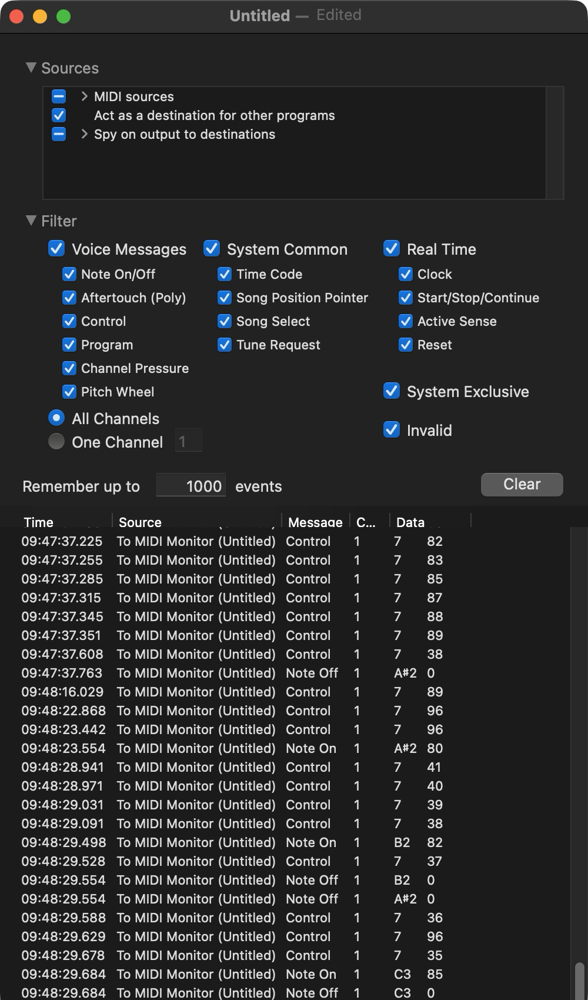
not saved yet../midi/midi-monitor-window-01.png
14. USB C instrument rear
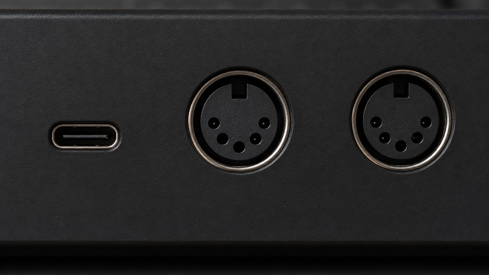
not saved yet../midi/midi-usb-c-instrument-rear-01.jpg